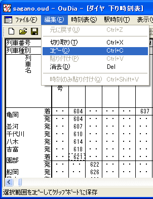
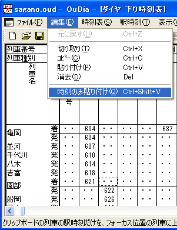
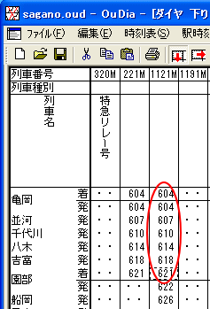

（例では、園部止めの列車 221M と、園部始発の列車 1121M を直通にしています）
１． 終着列車にフォーカスセルを設定して、メニュー [編集]→[コピー] を選択します。 これにより、終着列車がクリップボードに保存されます。

２． 始発列車にフォーカスセルを設定して、メニュー [編集]→[時刻のみ貼り付け] を選択します。

・・・終着列車の時刻部分が、始発列車に上書きされます。

次へ 前へ 戻る